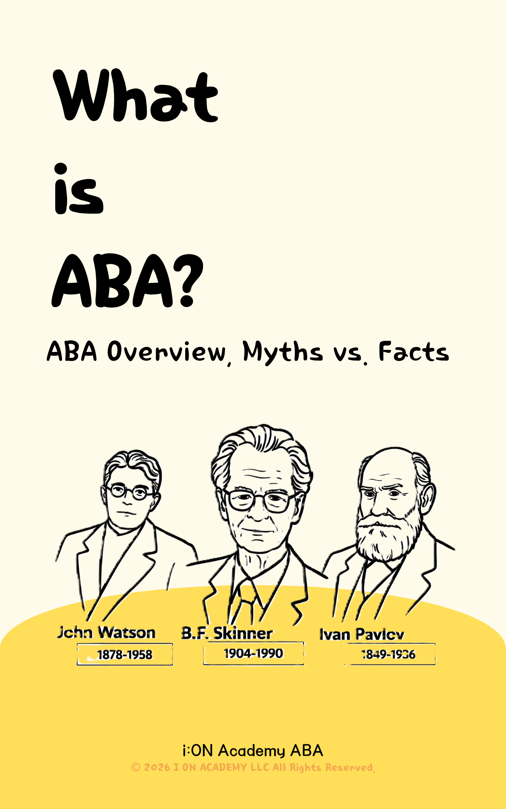
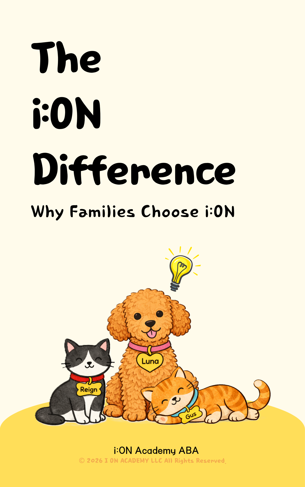
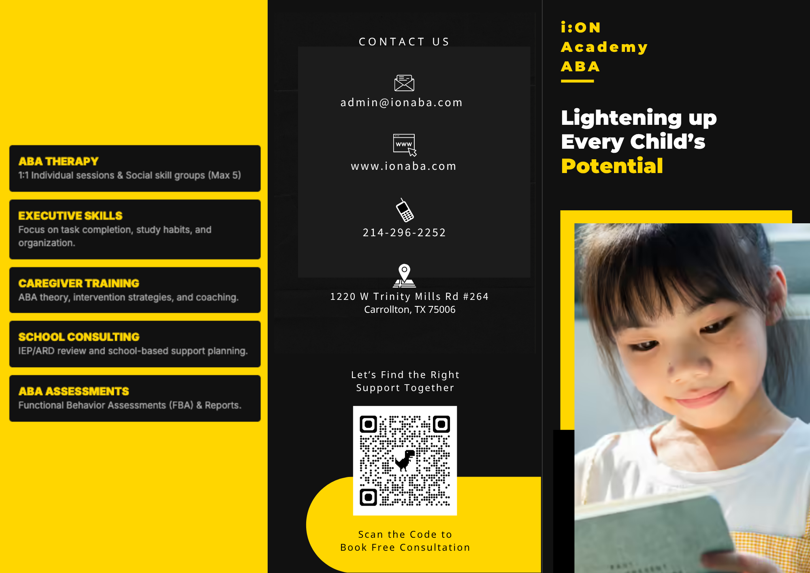
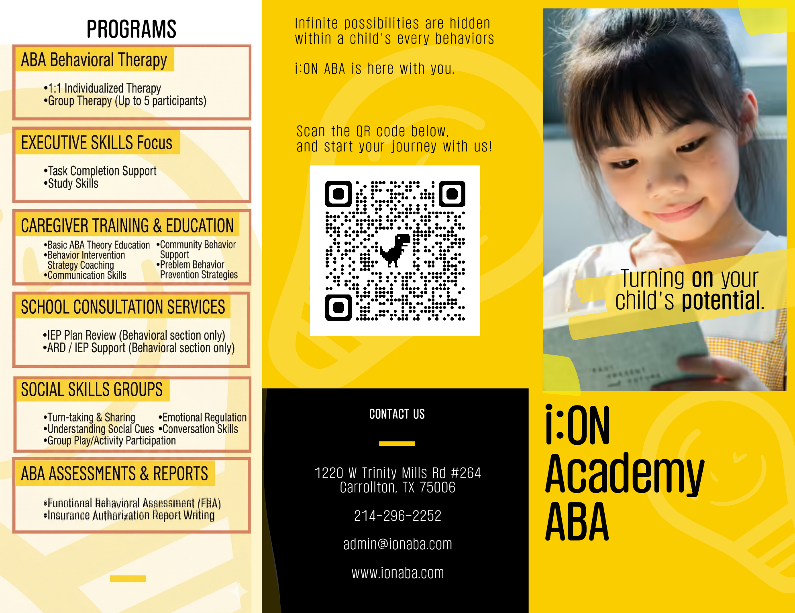
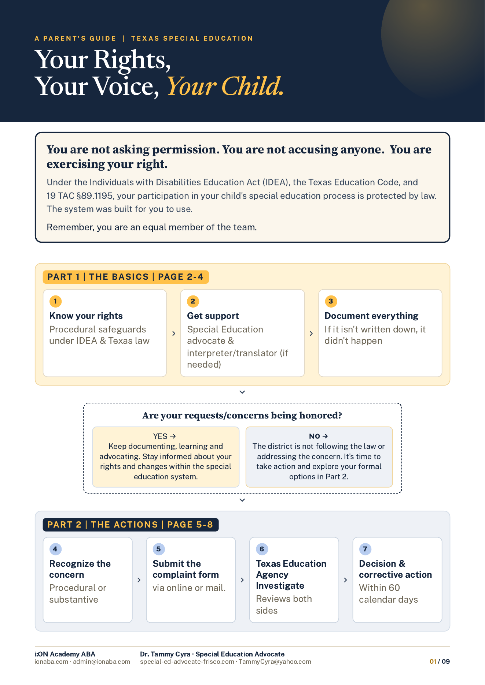

L
Learning
We are lifelong learners. Every interaction is a chance to grow for children, families, and ourselves.

Welcome to i:ON Academy ABA
We serve children ages 2–21 with behavioral, developmental, and executive functioning support needs by building compassionate, ethical partnerships with families that empower children to grow with the joy of everyday life!
Explore ServicesAbout i:ON Academy ABA
The “i” comes from the Korean word for “child,” because every child is at the heart of everything we do.
“ON” represents turning possibilities on, unlocking communication, independence, confidence, and lifelong joy.
Together with families, we discover their strengths, build social significant skills, and reach their fullest potential.

L
We are lifelong learners. Every interaction is a chance to grow for children, families, and ourselves.
I
We act with honesty and respect. Guided by assent based care, we honor every child’s voice and dignity.
G
Progress over perfection. We extend grace while still holding high expectations.
H
Hope fuels progress. We help families see possibilities beyond today’s challenges.
T
Earned through consistency, accountability, and genuine partnership with children and families first.
At the center of L•I•G•H•T is JOY,
the delight found in growth, inclusion, and meaningful connection.
Our mission is not to serve as the light for a child.
Let them discover their own.
THE i:ON DIFFERENCE
THE TEAM THAT TURNS POTENTIAL INTO POSSIBILITY
FOLLOW ALONG
Meet the i:ON Pals
ABA Concepts

Reign breaks down ABA concepts in clear, plain language for parents.
Real-Life Application

Luna shows how those concepts play out in real, everyday situations.
i:ON Updates & Beyond

Gus shares clinic news, updates, and helpful knowledge beyond ABA.

TESTIMONIALS
“i:ON Academy has been a game-changer for our family. The BCBAs are not only skilled but also genuinely caring. We have seen incredible progress in our child’s communication and social skills. The support and guidance we receive as parents have made this journey so much easier. We are grateful to be part of the i:ON community!” — Anonymous Parent
Our Services
Individualized one-on-one therapy that builds communication, behavior, emotional regulation, independence, and everyday life skills at home, in the clinic, or in the community.
Learn moreReal-world practice in community settings to build confidence, independence, and functional skills that carry over into everyday life.
Practical coaching that equips families with strategies to support behavior, communication, daily routines, and independence.
Learn moreTeaching everyday skills such as self-care, hygiene, safety, household routines, and community participation to promote greater independence.
Support for organization, planning, homework, time management, task initiation, and follow-through to help children in grades 4–6 and high school students.
Learn moreComprehensive evaluations that identify strengths and needs to guide individualized treatment planning and support insurance authorization.
Learn morePartnering with schools through classroom consultation, behavior plans, ARD/IEP support, and strategies that promote success across settings.
Contact usThe UCLA Program for the Education and Enrichment of Relational Skills (PEERS®) is for teens ages 14–17 and teaches conversation skills, friendship building, conflict resolution, and social confidence through role-play, guided practice, and real-world application.
Stay informed
Questions?
We provide services for children and young adults ages 2–21. Our team supports children with autism, ADHD, Down syndrome, executive functioning challenges, developmental delays, and other behavioral or developmental support needs.
Every child is unique, and no provider can ethically determine whether a child needs services without first understanding their individual strengths and needs. Our assessment helps identify your child’s current abilities, areas of need, and the supports that may be most beneficial.
Children may benefit from support if they experience challenges with communication, social interaction, emotional regulation, executive functioning, daily living skills, independence, or challenging behaviors. If another service is a better fit, we’re happy to help guide your family in that direction. Ultimately, the decision to begin services is always yours.
It’s completely understandable to have questions. Applied Behavior Analysis (ABA) has evolved significantly over the years, and today’s ethical, evidence-based practices emphasize respect, collaboration, individualized care, and meaningful outcomes that improve quality of life.
At i:ON Academy, we help children build communication, independence, emotional regulation, social relationships, executive functioning, and everyday life skills. Every treatment plan is individualized to meet each child’s unique strengths, needs, and goals.
We encourage families to ask questions, explore different approaches, and choose the provider that best aligns with their family’s values.
We provide services in a variety of settings, including the home, clinic, community, and, when permitted, the school. Because every school has its own policies regarding outside providers, some schools allow direct intervention, while others may permit classroom observations, consultation, or collaboration with teachers.
We’re happy to work alongside your child’s school to determine the most appropriate level of support.
We are currently in network with Blue Cross Blue Shield and are actively expanding our insurance partnerships. We are also credentialed with Aetna and Cigna; however, we are not currently accepting new clients under those plans. If you have Aetna or Cigna insurance, please contact us to inquire about current availability.
We also offer private-pay services and may be able to utilize out-of-network benefits, depending on your insurance plan. If you're unsure about your coverage, our team is happy to verify your benefits and explain your options.
For the most up-to-date information regarding coverage and payment options, please contact us at admin@ionaba.com.
Focus Lab is an in-person executive functioning program for 4th–6th grade students and high school students. It supports organization, planning, homework, time management, and independence. A formal diagnosis is not required to participate.
Please email academy@ionaba.com for more inquiries.
PEERS® is an evidence-based social skills program for teens ages 14–17. Participants should be able to communicate using spoken language and participate successfully in a general education or similar group-learning environment. A formal diagnosis is not required for private-pay enrollment, but may be required for insurance coverage.
Please email academy@ionaba.com for more inquiries.
Yes. We provide individualized support for children with Down syndrome, focusing on communication, independence, social development, executive functioning, and everyday life skills. Collaboration with your child's Physical Therapist is strongly recommended.
For information about our Focus Lab ADHD Program, Down Syndrome Support, or PEERS® Social Skills Groups, please contact us for current availability and enrollment.
Please email academy@ionaba.com for more inquiries.
Getting started is simple. First, complete our 30-minute consultation request form so we can learn about your child’s strengths, needs, and goals. If we’re a good fit, we’ll complete a comprehensive assessment while beginning the insurance authorization process, if applicable.
Once your assessment and authorization are complete, we’ll create an individualized treatment plan tailored to your child’s needs and schedule services. Our team will guide you through every step of the process and answer your questions along the way.
Parents are essential members of the treatment team. We encourage families to participate in parent coaching sessions, practice strategies between visits, communicate regularly with the treatment team, and share both successes and concerns.
Your involvement plays a vital role in helping your child make meaningful and lasting progress across home, school, and community settings.
Yes. We encourage parents and caregivers to observe sessions, participate in parent coaching, and learn strategies they can use during everyday routines. Your involvement plays an important role in helping your child build and maintain new skills across settings.
When appropriate, yes. Siblings may be included in activities that support communication, play, social interaction, and the generalization of skills. Including siblings can help children practice new skills more naturally within everyday family life.
We’re here to help. Whether you’re exploring services, comparing providers, or simply wondering whether i:ON Academy is the right fit for your family, we’d love to talk with you.
Schedule a free consultation to learn how we can support your child and family.
HELPFUL TOOLS

What is ABA? ABA overview · myths vs facts PDF
The i:ON Difference Why families choose us PDF
i:ON Flyer Services overview · contact PDF
Getting Started Your first 30 days PDF
Turning Concerns into Action Texas special education guideTRUSTED ORGANIZATIONS WE COLLABORATE WITH
Art programs for children of all ages, including portfolio preparation, group classes, and small-group instruction for children with special needs.
Children enrolled at Bright Minds Preschool may be able to receive ABA therapy from i:ON during the preschool day, based on treatment plans and scheduling.
Pediatric medical care for children and families, supporting wellness, development, and coordinated care alongside therapy teams.
Advocacy support for IEP meetings, Section 504 Plans, educational rights, school collaboration, and parent support.
Counseling services for parents, caregivers, siblings, children, and adolescents.
Pediatric occupational therapy and physical therapy available in the clinic or through traveling therapists.
Clinical consultation, BCBA supervision, professional collaboration, and clinical development resources for evidence-based care.
Let’s Get Started.
We’re here to support your child’s growth.
Dedication. Empathy. Passion. Let us invest in you!
We are looking for Registered Behavior Technician® and aspiring Behavior Technicians who are ethical,patient, creative, passionate, and ready to grow in Applied Behavior Analysis.
At i:ON, our team receives training, clinical guidance, regular support, and a workplace that values care, respect, and collaboration.
We intentionally maintain small BCBA caseloads to provide meaningful supervision, hands-on coaching, and responsive support to every Behavior Technician and every child we serve.
Turn possibilities ON- starting with YOURS.